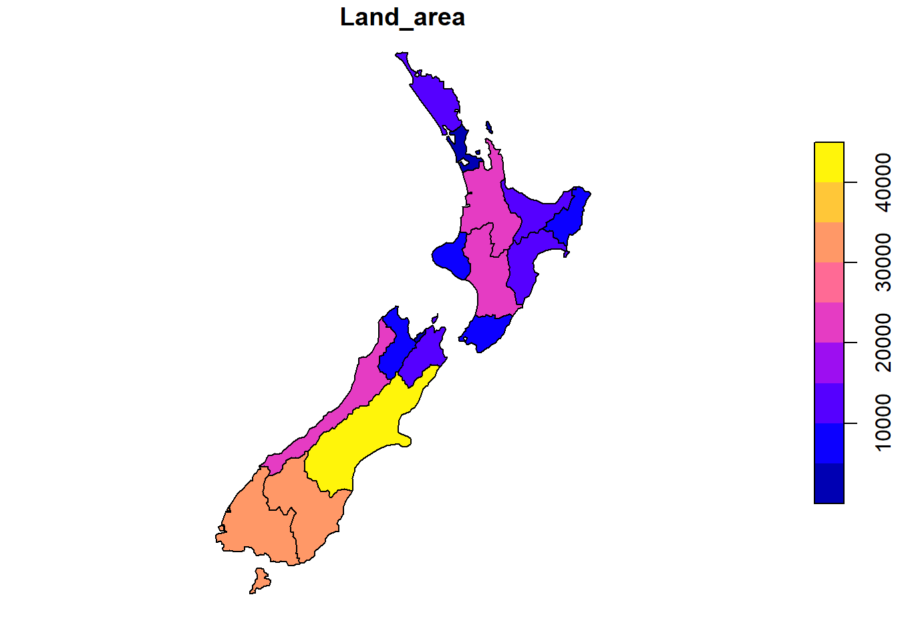
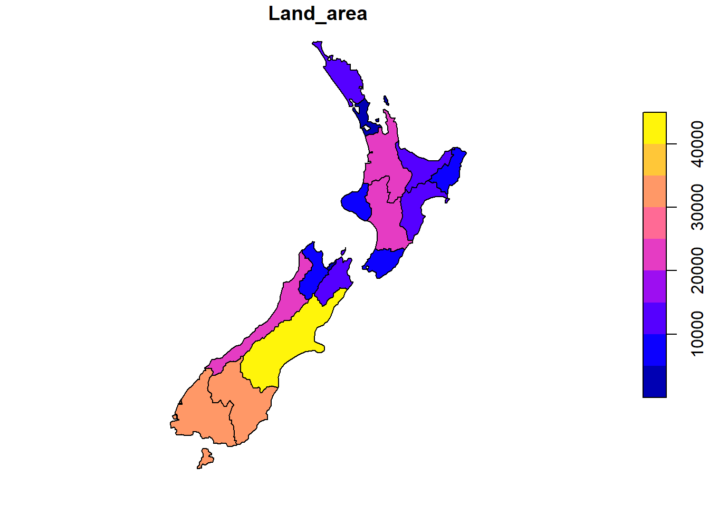
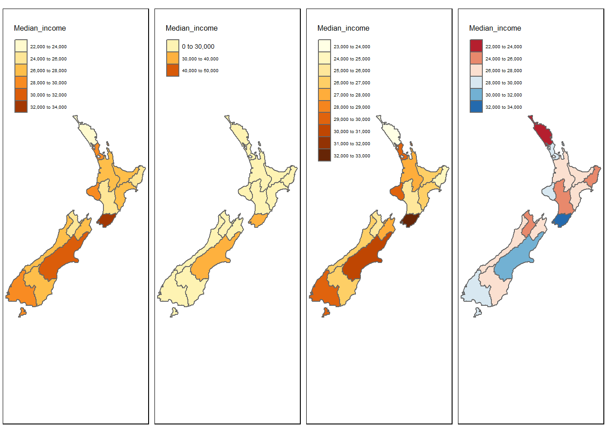
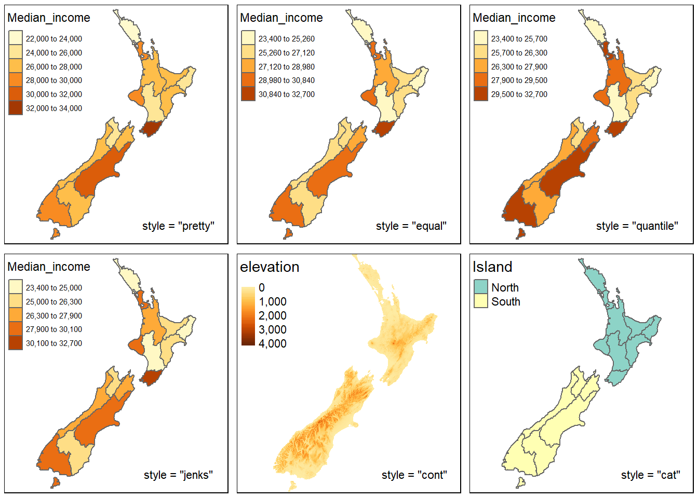
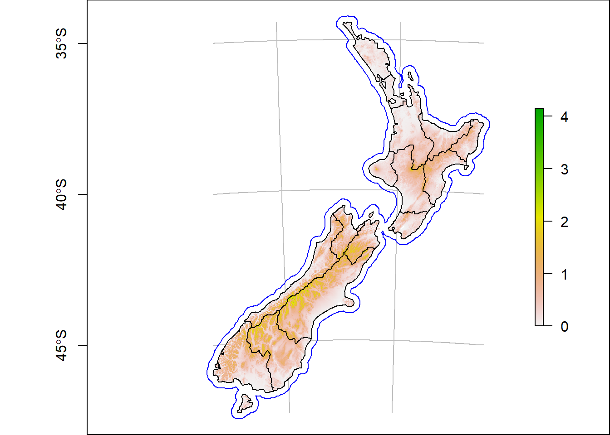
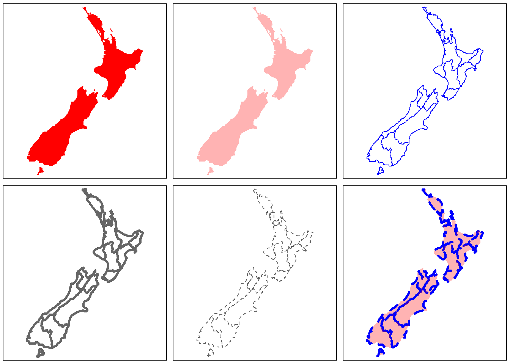
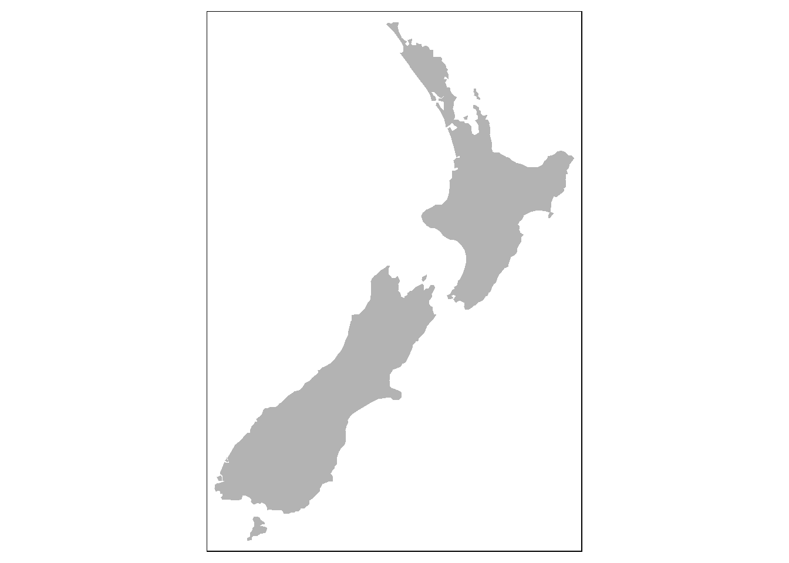

4 Work in progress
## -- Attaching packages --------------------------------------------------------------------------- tidyverse 1.2.1 --## v ggplot2 3.2.1 v purrr 0.3.2
## v tibble 2.1.3 v dplyr 0.8.3
## v tidyr 0.8.3 v stringr 1.4.0
## v readr 1.3.1 v forcats 0.4.0## -- Conflicts ------------------------------------------------------------------------------ tidyverse_conflicts() --
## x dplyr::filter() masks stats::filter()
## x dplyr::lag() masks stats::lag()##
## Attaching package: 'kableExtra'## The following object is masked from 'package:dplyr':
##
## group_rows## Linking to GEOS 3.6.1, GDAL 2.2.3, PROJ 4.9.3## Registered S3 method overwritten by 'geojsonio':
## method from
## print.location dplyr##
## Attaching package: 'geojsonio'## The following object is masked from 'package:base':
##
## pretty## Multiple layers are present in data source C:\Code\Creating-maps-in-R\data\invasive-species-NAH-research.kml, reading layer `Hollyford'.
## Use `st_layers' to list all layer names and their type in a data source.
## Set the `layer' argument in `st_read' to read a particular layer.## Warning in evalq((function (..., call. = TRUE, immediate. = FALSE,
## noBreaks. = FALSE, : automatically selected the first layer in a data
## source containing more than one.## Reading layer `Hollyford' from data source `C:\Code\Creating-maps-in-R\data\invasive-species-NAH-research.kml' using driver `KML'
## Simple feature collection with 10 features and 2 fields
## geometry type: GEOMETRY
## dimension: XYZ
## bbox: xmin: 167.9963 ymin: -45.06019 xmax: 168.1392 ymax: -44.70935
## epsg (SRID): 4326
## proj4string: +proj=longlat +datum=WGS84 +no_defs
## Observations: 10
## Variables: 3
## $ Name <fct> Gunns Camp, Choqenout and Ruscoe 2000, Hollyford V...
## $ Description <fct> "", "Eglinton Valley", "", "", "", "", "", "", "",...
## $ geometry <GEOMETRY [°]> POINT Z (168.1392 -44.76039 0), POINT Z (...| folder | name | description | styleUrl | longitude | latitude | altitude |
|---|---|---|---|---|---|---|
| Hollyford | Gunns Camp | NA | #icon-1899-0288D1-nodesc | 168.1392 | -44.76039 | 0 |
| Hollyford | Choqenout and Ruscoe 2000 | Eglinton Valley | #icon-1899-0288D1 | 167.9963 | -45.06019 | 0 |
| Hollyford | Hollyford Valley Lookout | NA | #icon-1899-0288D1-nodesc | 168.1050 | -44.80905 | 0 |
| Hollyford | Hollyford Airstrip | NA | #icon-1899-0288D1-nodesc | 168.1337 | -44.73744 | 0 |
| Hollyford | Point 9 | NA | #icon-1899-0288D1-nodesc | 168.1262 | -44.79766 | 0 |
| Hollyford | Point 10 | x = 10, y = 250 | #icon-1899-0288D1 | 168.0794 | -44.90247 | 0 |
| Eglinton Valley | MR1 | NA | #icon-1899-F9A825-nodesc | 168.0776 | -44.89081 | 0 |
| Eglinton Valley | M1 | NA | #icon-1899-FBC02D-nodesc | 168.1005 | -44.85371 | 0 |
| Eglinton Valley | M1 | NA | #icon-1899-FBC02D-nodesc | 168.0748 | -44.89257 | 0 |
| Eglinton Valley | R1 | NA | #icon-1899-000000-nodesc | 168.0968 | -44.85569 | 0 |
| Eglinton Valley | MR1 | NA | #icon-1899-FBC02D-nodesc | 168.0995 | -44.85768 | 0 |
| Eglinton Valley | R1 | NA | #icon-1899-000000-nodesc | 168.0789 | -44.89277 | 0 |
4.1 Building maps for manuscripts
These starting resources have come from chapter-8 of the geocomp book. To make this quick I have used the rmarkdown function render to create a r file that can then be sourced here for building my data specific maps.
# rmarkdown::render("./03-Work-In-Progress.Rmd")
# knitr::purl("./03-Work-In-Progress.Rmd", "./R/03-Work-In-Progress.R", documentation = 2)## Multiple layers are present in data source C:\Code\Creating-maps-in-R\data\invasive-species-NAH-research.kml, reading layer `Hollyford'.
## Use `st_layers' to list all layer names and their type in a data source.
## Set the `layer' argument in `st_read' to read a particular layer.## Warning in evalq((function (..., call. = TRUE, immediate. = FALSE,
## noBreaks. = FALSE, : automatically selected the first layer in a data
## source containing more than one.## Reading layer `Hollyford' from data source `C:\Code\Creating-maps-in-R\data\invasive-species-NAH-research.kml' using driver `KML'
## Simple feature collection with 10 features and 2 fields
## geometry type: GEOMETRY
## dimension: XYZ
## bbox: xmin: 167.9963 ymin: -45.06019 xmax: 168.1392 ymax: -44.70935
## epsg (SRID): 4326
## proj4string: +proj=longlat +datum=WGS84 +no_defs
## Observations: 10
## Variables: 3
## $ Name <fct> Gunns Camp, Choqenout and Ruscoe 2000, Hollyford V...
## $ Description <fct> "", "Eglinton Valley", "", "", "", "", "", "", "",...
## $ geometry <GEOMETRY [°]> POINT Z (168.1392 -44.76039 0), POINT Z (... 

## Legend labels were too wide. The labels have been resized to 0.29, 0.29, 0.29, 0.29, 0.29, 0.29. Increase legend.width (argument of tm_layout) to make the legend wider and therefore the labels larger.## Legend labels were too wide. The labels have been resized to 0.44, 0.29, 0.29. Increase legend.width (argument of tm_layout) to make the legend wider and therefore the labels larger.## Legend labels were too wide. The labels have been resized to 0.29, 0.29, 0.29, 0.29, 0.29, 0.29, 0.29, 0.29, 0.29, 0.29. Increase legend.width (argument of tm_layout) to make the legend wider and therefore the labels larger.## Legend labels were too wide. The labels have been resized to 0.29, 0.29, 0.29, 0.29, 0.29, 0.29. Increase legend.width (argument of tm_layout) to make the legend wider and therefore the labels larger.
## Legend labels were too wide. The labels have been resized to 0.47, 0.47, 0.47, 0.47, 0.47, 0.47. Increase legend.width (argument of tm_layout) to make the legend wider and therefore the labels larger.## Legend labels were too wide. The labels have been resized to 0.47, 0.47, 0.47, 0.47, 0.47. Increase legend.width (argument of tm_layout) to make the legend wider and therefore the labels larger.
## Legend labels were too wide. The labels have been resized to 0.47, 0.47, 0.47, 0.47, 0.47. Increase legend.width (argument of tm_layout) to make the legend wider and therefore the labels larger.
## Legend labels were too wide. The labels have been resized to 0.47, 0.47, 0.47, 0.47, 0.47. Increase legend.width (argument of tm_layout) to make the legend wider and therefore the labels larger.

## Legend labels were too wide. The labels have been resized to 0.44, 0.29, 0.29, 0.29, 0.29. Increase legend.width (argument of tm_layout) to make the legend wider and therefore the labels larger.## Legend labels were too wide. The labels have been resized to 0.44, 0.29, 0.29, 0.29, 0.29. Increase legend.width (argument of tm_layout) to make the legend wider and therefore the labels larger.
## Legend labels were too wide. The labels have been resized to 0.44, 0.29, 0.29, 0.29, 0.29. Increase legend.width (argument of tm_layout) to make the legend wider and therefore the labels larger.
## Legend labels were too wide. The labels have been resized to 0.44, 0.29, 0.29, 0.29, 0.29. Increase legend.width (argument of tm_layout) to make the legend wider and therefore the labels larger.
## Legend labels were too wide. The labels have been resized to 0.44, 0.29, 0.29, 0.29, 0.29. Increase legend.width (argument of tm_layout) to make the legend wider and therefore the labels larger.
## Legend labels were too wide. The labels have been resized to 0.44, 0.29, 0.29, 0.29, 0.29. Increase legend.width (argument of tm_layout) to make the legend wider and therefore the labels larger.
## Legend labels were too wide. The labels have been resized to 0.44, 0.29, 0.29, 0.29, 0.29. Increase legend.width (argument of tm_layout) to make the legend wider and therefore the labels larger.
## Legend labels were too wide. The labels have been resized to 0.44, 0.29, 0.29, 0.29, 0.29. Increase legend.width (argument of tm_layout) to make the legend wider and therefore the labels larger.
## Legend labels were too wide. The labels have been resized to 0.44, 0.29, 0.29, 0.29, 0.29. Increase legend.width (argument of tm_layout) to make the legend wider and therefore the labels larger.
## Legend labels were too wide. The labels have been resized to 0.44, 0.29, 0.29, 0.29, 0.29. Increase legend.width (argument of tm_layout) to make the legend wider and therefore the labels larger.
## Legend labels were too wide. The labels have been resized to 0.44, 0.29, 0.29, 0.29, 0.29. Increase legend.width (argument of tm_layout) to make the legend wider and therefore the labels larger.## tmap mode set to interactive viewing## tmap mode set to plotting
## Parsed with column specification:
## cols(
## package = col_character(),
## published = col_date(format = ""),
## title = col_character(),
## depends_count = col_double(),
## suggests_count = col_double(),
## tidyverse_happy = col_logical(),
## has_vignette_build = col_logical(),
## has_tests = col_logical(),
## reverse_count = col_double(),
## dl_last_month = col_double(),
## ci = col_character(),
## test_coverage = col_character(),
## forks = col_double(),
## stars = col_double(),
## watchers = col_double(),
## last_commit = col_double(),
## last_issue_closed = col_double(),
## contributors = col_double()
## )## Mean size error for iteration 1: 2.55875465805575## Mean size error for iteration 2: 1.79272875527739## Mean size error for iteration 3: 1.43598715415039## Mean size error for iteration 4: 1.25491843756565## Mean size error for iteration 5: 1.15398221468619
## Observations: 16
## Variables: 7
## $ Name <chr> "Northland", "Auckland", "Waikato", "Bay of Plen...
## $ Island <chr> "North", "North", "North", "North", "North", "No...
## $ Land_area <dbl> 12500.5611, 4941.5726, 23900.0364, 12071.1447, 8...
## $ Population <dbl> 175500, 1657200, 460100, 299900, 48500, 164000, ...
## $ Median_income <int> 23400, 29600, 27900, 26200, 24400, 26100, 29100,...
## $ Sex_ratio <dbl> 0.9424532, 0.9442858, 0.9520500, 0.9280391, 0.93...
## $ geom <MULTIPOLYGON [m]> MULTIPOLYGON (((1745493 600..., MUL...4.1.1 First outline from tmap
ma1 = tm_shape(nz) + tm_fill(col = "red")
ma2 = tm_shape(nz) + tm_fill(col = "red", alpha = 0.3)
ma3 = tm_shape(nz) + tm_borders(col = "blue")
ma4 = tm_shape(nz) + tm_borders(lwd = 3)
ma5 = tm_shape(nz) + tm_borders(lty = 2)
ma6 = tm_shape(nz) + tm_fill(col = "red", alpha = 0.3) +
tm_borders(col = "blue", lwd = 3, lty = 2)
tmap_arrange(ma1, ma2, ma3, ma4, ma5, ma6)


legend_title <- expression("Area (km"^2*")")
tm_shape(nz) +
tm_fill(col = "black", alpha = 0.3) +
tm_borders(col = "blue") +
tm_shape(nz) +
tm_fill(col = "Land_area", title = legend_title) + tm_borders()

